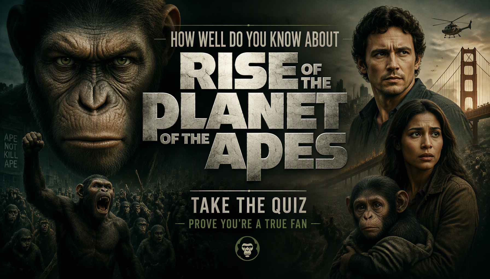

SCIENCE FICTION • MOVIE TRIVIA
Rise of the Planet of the Apes Quiz
Think you know Caesar's story? Test your knowledge of Caesar, Will Rodman, Bright Eyes, ALZ-112, ALZ-113, Gen-Sys and the events that lead to the rise of intelligent apes in Rise of the Planet of the Apes.
One answer is correct for each question. Choose carefully and see how well you remember Caesar's journey from a laboratory experiment to the leader of the escaping apes.
This quiz contains major story details from Rise of the Planet of the Apes.


ABOUT THE QUIZ
The Rise of the Planet of the Apes Movie Quiz is a 30-question trivia challenge for fans of the 2011 science-fiction movie Rise of the Planet of the Apes. The film follows Will Rodman, a scientist working on an experimental Alzheimer's treatment, and Caesar, a genetically enhanced chimpanzee whose intelligence develops far beyond that of an ordinary ape.
The questions cover Caesar, Will Rodman, Charles Rodman, Caroline Aranha, Bright Eyes, Robert Franklin, Steven Jacobs, the Gen-Sys experiments, the primate shelter, ALZ-112, ALZ-113 and the events leading to the apes' escape.
Some questions test major plot details, while others focus on smaller facts about the apes, characters, experiments and events in the film. If you remember Caesar's journey from Will's home to the San Francisco ape escape, this quiz gives you a chance to test your memory.
Rise of the Planet of the Apes Movie Details
Title: Rise of the Planet of the Apes
Release Year: 2011
Genre: Science fiction, action, thriller
Director: Rupert Wyatt
Main Characters: Caesar, Will Rodman, Charles Rodman, Caroline Aranha, Steven Jacobs, Robert Franklin and the apes at the primate shelter.
The story follows Caesar after he is created through Will Rodman's experimental Alzheimer's research. As Caesar's intelligence develops, his experiences with humans and other apes eventually lead him to organize an escape and begin a new chapter in the relationship between humans and apes.
WHAT THIS QUIZ COVERS
The questions cover important characters, locations, experiments, ape species and major events from Rise of the Planet of the Apes.
Caesar
Questions about Caesar's origins, his biological mother, his intelligence, his relationship with Will and his experiences at the primate shelter.
Will Rodman and His Research
Questions cover Will's Alzheimer's research, ALZ-112, ALZ-113, Gen-Sys and his attempts to develop a treatment for his father Charles.
The Apes
The quiz covers Bright Eyes, Maurice, Rocket, Buck, Koba and other apes encountered during Caesar's story. Questions include ape species, backgrounds and important events involving the apes.
The Primate Shelter
Questions cover Caesar's transfer to the shelter, John and Dodge Landon, the other captive apes and the events that eventually lead to Caesar's escape plan.
ALZ-112 and ALZ-113
Several questions focus on the experimental drugs, their effects on humans and apes and the development of ALZ-113.
HOW THE QUIZ WORKS
The quiz contains 30 questions. Every question has four possible choices, but only one answer is correct. Read each question carefully and select the answer you believe is correct before continuing.
Each correct answer gives you 1 point, while an incorrect answer gives you 0 points. With 30 questions in total, your number of correct answers is converted into a final percentage out of 100%.
Your final result represents your knowledge of the movie based on your performance. A high score means you successfully remembered many of the characters, events, experiments and details featured in Rise of the Planet of the Apes.
Quiz Navigation
Starting the quiz
Select START QUIZ on the opening screen to begin. The first question will appear with four possible answers.
Selecting an answer
Read the question and all four choices before making your decision. Select the answer you believe is correct and continue through the quiz.
Next and Back buttons
Use Next to move forward through the questions. The Back button allows you to return to an earlier question and review your selection. Your current question number and progress are displayed as you move through the quiz.
Finishing the quiz
Continue until you have answered all 30 questions. When you reach the end, submit your answers to finish the quiz and view your final percentage and Rise of the Planet of the Apes Movie Knowledge result.
Try Again and Challenge Friends
After viewing your result, select TRY AGAIN to replay the quiz and attempt a higher score. You can also use SHARE MY RESULT or CHALLENGE YOUR FRIENDS to share your result and challenge other fans.
FAQ
How many questions are in the quiz?
There are 30 questions in total, and every question has four possible choices.
What is the maximum score?
The maximum result is 100%. Each correct answer contributes 1 point before the score is converted into a percentage.
What topics are covered?
The quiz focuses on Rise of the Planet of the Apes, including Caesar, Will Rodman, Charles Rodman, Bright Eyes, Caroline Aranha, Gen-Sys, ALZ-112, ALZ-113, the primate shelter and the ape escape.
Is this quiz about Caesar?
Caesar is one of the main subjects of the quiz, but the questions also cover Will, Caroline, Charles, the other apes, Gen-Sys, the primate shelter and important events from the movie.
What does my score mean?
Your percentage shows how many of the 30 movie-related questions you answered correctly. A higher score indicates stronger knowledge of Rise of the Planet of the Apes.
Can I take the quiz again?
Yes. Select TRY AGAIN after completing the quiz to start another attempt and try to improve your score.
Can I challenge my friends?
Yes. Select CHALLENGE YOUR FRIENDS after completing the quiz to share the challenge and see whether your friends can beat your score.
Spoiler Warning
This quiz contains spoilers for Rise of the Planet of the Apes. Questions may reveal Caesar's origins, Will Rodman's research, Bright Eyes, ALZ-112, ALZ-113, the primate shelter, the ape escape and other important details from the movie.
If you have not watched Rise of the Planet of the Apes, consider watching the movie before taking the quiz to avoid having important story details spoiled.